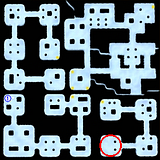

ปล.ดังนั้นใช้Criticalอย่างเดียวดีกว่าสินะ
ถามต่อเลยนะคร้าบ
สกิลCombine Forceที่บอกว่าเมื่อตั้งตี้จะได้รับโบนัสพลังโจมตีอ่ะครับ
มันมีผลยังไงเหรอ
 โดย ECO » พุธ 03 ก.ย. 2008 11:14 pm
โดย ECO » พุธ 03 ก.ย. 2008 11:14 pm
spiningdeff_source เขียน:ขอบพระคุณครับ
<ขอจุดเกิดของคิงโรเปอร์กับบอสไก่หน่อยครับ>
 บอสไก่
บอสไก่
 บอสไฮดร้า
บอสไฮดร้า
 บอสหมีขาว
บอสหมีขาว
 บอสหมี
บอสหมี
 บอสปลา
บอสปลา
 บอสไทนี่
บอสไทนี่

บอสไพ่ บอสนก
บอสนก

 โดย ECO » พุธ 03 ก.ย. 2008 11:17 pm
โดย ECO » พุธ 03 ก.ย. 2008 11:17 pm
 โดย ECO » พุธ 03 ก.ย. 2008 11:45 pm
โดย ECO » พุธ 03 ก.ย. 2008 11:45 pm
 โดย ECO » พฤหัสฯ. 04 ก.ย. 2008 10:25 am
โดย ECO » พฤหัสฯ. 04 ก.ย. 2008 10:25 am
 โดย ECO » พฤหัสฯ. 04 ก.ย. 2008 1:26 pm
โดย ECO » พฤหัสฯ. 04 ก.ย. 2008 1:26 pm
Donlanai เขียน:วิธีฝึก M.atk / Mag hit / ความเร็วในการร่าย ของ pet นั้นมีเพียง 2 ทางครับ
ทางแรก ใช้ได้กับ pet ประจำอาชีพที่มีสกิลสั่งในคลาสนั้น เช่น ทหาร หมาบ้าน หมาป่า แครอท ไชเท้า ที่สามารถใช้ trader explorer alchemist สั่งได้
ทางที่สอง สำหรับ pet ที่สั่งไม่ได้ มีวิธีเดียวคือตัวเราต้องถูกม่อนอัดบ่อยๆเพื่อเป็นการกระตุ้นให้ pet ใช้สกิลสนับสนุนเราครับ หรือพูดง่ายๆคือ เป็น breeder แล้ววิ่งลง รร. ใต้ ไปลากม่อนด้วยตัวเองได้เลย ถอดชุดด้วยล่ะถ้าไม่อยากให้มันพัง ผมลองวิธีนี้ไป แมวอากาเนะใช้เกราะให้ผมบ่อยพอสมควรเหมือนกัน ได้ M.atk Mag hit ระดับนึง แต่มันชอบขึ้น ความเร็วในการร่ายซะมากกว่า ซึ่งขึ้นก็ดีแล้ว มันจะได้ใช้สกิลถี่ขึ้น.. วิธีนี้ใช้ได้กับ pet ทุกชนิดที่สั่งมันใช้สกิลไม่ได้ครับ กระรอกเองก็เช่นกัน
 โดย ECO » พฤหัสฯ. 04 ก.ย. 2008 1:27 pm
โดย ECO » พฤหัสฯ. 04 ก.ย. 2008 1:27 pm
kittiya เขียน:spiningdeff_source เขียน:ผมเชื่อครับว่าพี่ไม่วาย
แค่หลงตัวเองนิดๆเองhock:
มันไม่หลงตัวเองหรอกค่ะ มันหน้าตาดีจริงๆ =x= ไม่เชื่อไปดูภาพตอนMeetingได้ หาเอาละกันนะ
กำลังดูบอร์ดนี้: ไม่มีสมาชิก และ บุคคลทั่วไป 2 ท่าน